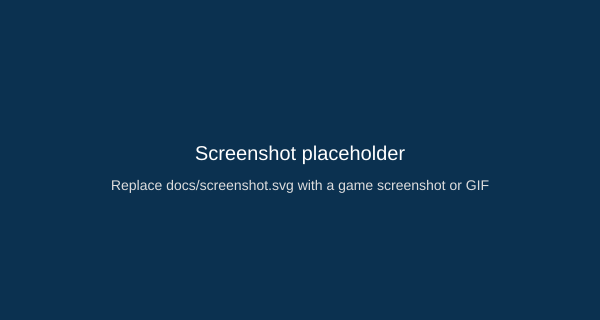

About
Jele Runner is a small native Android prototype: collect coins, buy skins, and dodge obstacles. The project is built with Kotlin and OpenGL ES and is intended as a fun, minimal example of a 3D runner.
- Virtual on-screen controls (Left / Jump / Right)
- Coin collection, skin shop and local saves
- Audio feedback and vibration
Screenshot / Demo

Replace this placeholder with a demo GIF or screenshot in the repository to show gameplay.
Run it locally
Clone the repository, open in Android Studio and run on an emulator or device (API 29+).
git clone https://github.com/GuardDog98/jele-runner-android.git cd jele-runner-android open in Android Studio
If a debug APK is provided in Releases you can download it from the Releases tab on GitHub.